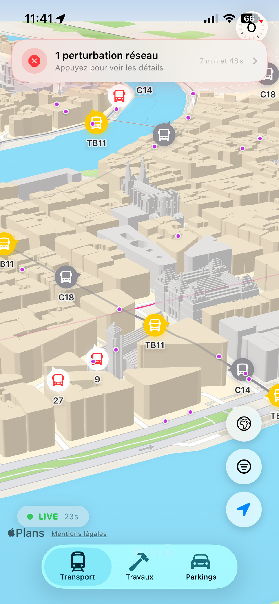
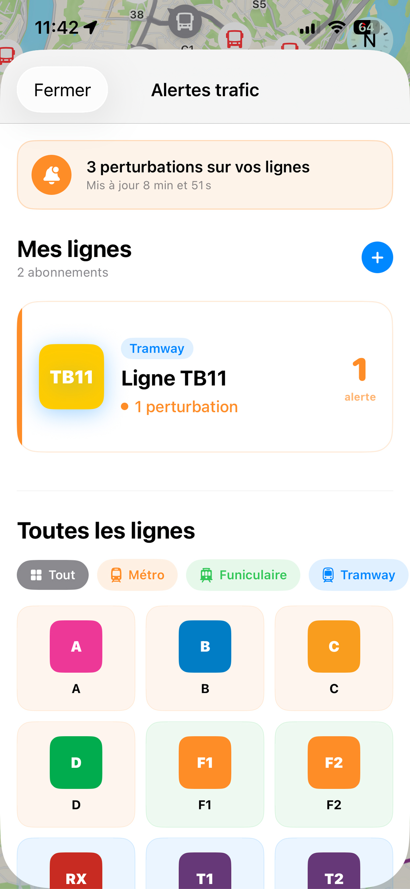
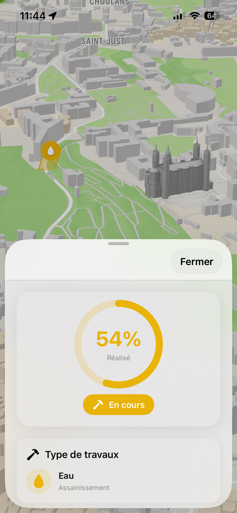
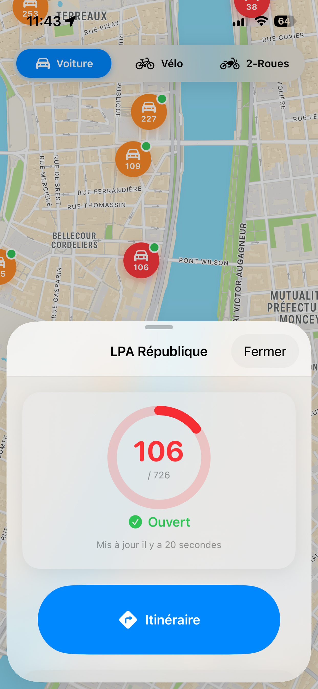
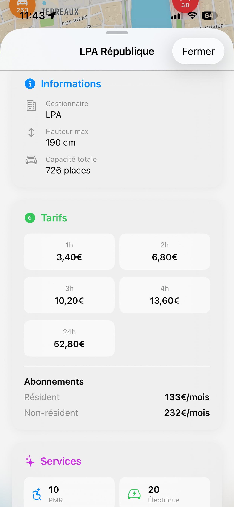
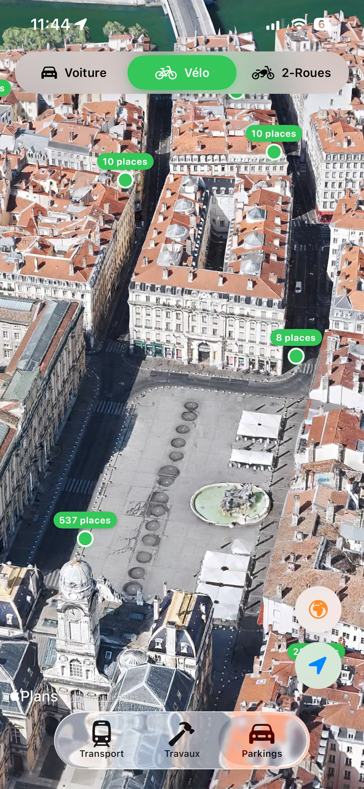

Véhicules en direct
Suivez la position de chaque bus, tram, métro et funiculaire en temps réel. Tapez sur un véhicule pour voir sa ligne, sa destination et les prochains arrêts.
Vous voyez votre bus arriver en direct. Pas une estimation. Pas un horaire théorique. Le vrai véhicule qui bouge en temps réel.

Suivez la position de chaque bus, tram, métro et funiculaire en temps réel. Tapez sur un véhicule pour voir sa ligne, sa destination et les prochains arrêts.
Tapez sur n'importe quel arrêt pour voir les prochains passages en temps réel. Toutes les lignes, à la seconde près.
Abonnez-vous à vos lignes et recevez une notification dès qu'une perturbation, déviation ou interruption les touche.
Tous les chantiers actifs sur le réseau et en ville, visualisés sur la carte. Idéal avant de prendre le vélo ou la voiture.
Consultez la disponibilité en direct des parkings relais autour de Lyon. Ne partez plus à l'aveugle.
Voyez les prochains départs de vos arrêts favoris sans même ouvrir l'app.
Des interfaces claires, rapides et natives iOS.





Aucune donnée collectée. Aucun compte. Aucun tracker. Vos préférences restent sur votre appareil. Point.
Politique de confidentialité →Téléchargez Lyon Pocket et ne ratez plus jamais un bus.
Télécharger sur l'App Store